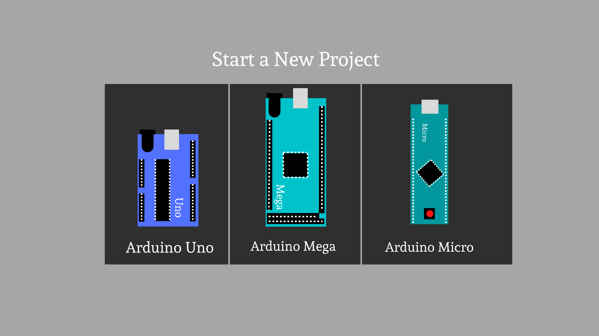
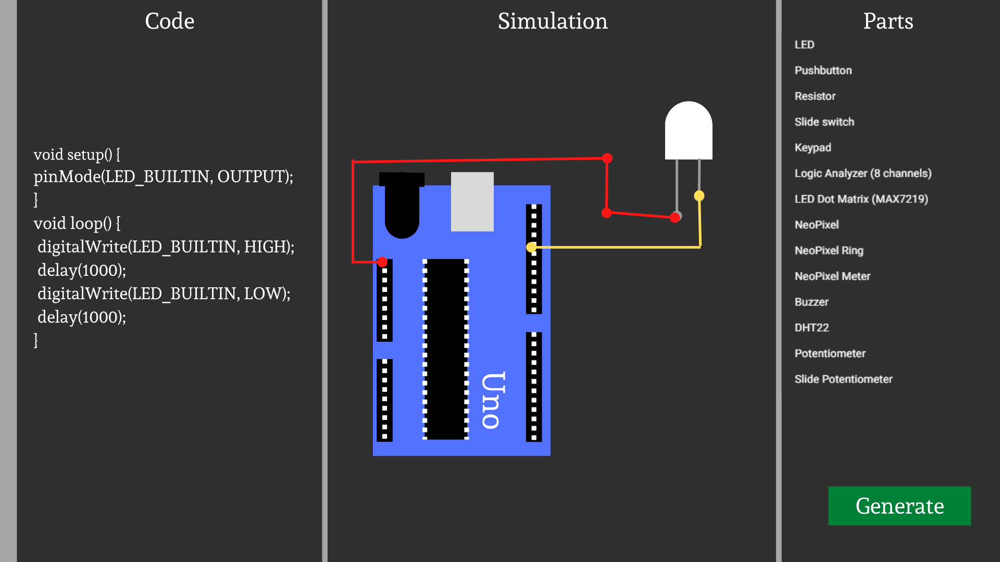

<main>
    <div class="panel" id="main_panel">
        <h1 id="title">Arduino code generator</h1>
        <section id="main_container">
            <h2>Author</h2>
            <ul typeof="sa:ContributorRole" property="schema:author">
                <li>
                    <meta property="schema:givenName" content="Andrei">
                    <meta property="schema:familyName" content="Furtuna">
                    <span property="schema:name">Andrei Furtuna</span>
                </li>
            </ul>
            <h2>Structure</h2>
            <ol>
                <li><a href="#introduction">Introduction</a></li>
                <ul>
                    <li>1.1 <a href="#purpose">Purpose</a></li>
                </ul>
                <li><a href="#description">Description</a></li>
                <ul>
                    <li>2.1 <a href="#perspectiva">Perspective</a></li>
                    <li>2.2 <a href="#clase">Target audience</a></li>
                    <li>2.3 <a href="#operare">Supported platforms</a></li>
                    <li>2.4 <a href="#constrangeri">Constraints</a></li>
                </ul>
                <li><a href="#interfata">Design</a></li>
                <ul>
                    <li>3.1 <a href="#utiliz">User interface</a></li>
                </ul>
            </ol>
            <hr>
            <section typeof="sa:Abstract" id="abstract" role="doc-abstract">
                <h2 id="introduction">1.Introducere</h2>
                <h5>The arduino code generator application offers users the ability to use arduino without having to
                    write code.
                    The simple and intuitive design facilitates the use of the application by a wide audience
                </h5>
            </section>

            <h3 id="purpose">1.1 Purpose</h3>
            The purpose of the application is to provide basic functionality when working with different arduino
            sensors. Drag-and-drop interaction helps to attract people who have never written code before.
            </p>
            <hr>

            <h2 id="description">2. Description</h2>

            <h3 id="perspectiva">2.1 Perspective</h3>

            <p>
                Arduino code generator is an application used for educational purposes to increase the interest in
                embedded systems.
            </p>
            <h3 id="clase">2.2 Target audience</h3>
            <p>
                Those who will use the application are people who have just started learning embedded systems</p>
            <h3 id="operare">2.3 Supported platforms</h3>
            <p>
                The application will be written in Java which will give it compatibility with any device and with any
                operating system except MAC and IOS
            </p>
            <h3 id="constraint">2.4 Constraints</h3>
            <p>
                The application will have some limitations, the users will not be able to add libraries and modules that
                are not already present in the application.
                Users will not be able to change the connections between arduino and modules
                <br>
            </p>

            <hr>
            <h2 id="interfata">3. Design</h2>

            <h3 id="utiliz">3.1 User interface</h3>
            <p typeof="sa:accessibilitySummary">
                After entering the application, users will see the star page where they can choose one of the 3 arduino
                boards.
                When you click on one of the arduino images, you are transferred to the next page.
            </p>
            <figure typeof="sa:image">
                
            </figure>
            <p>This page is divided into 3 sections.
                The Code section is for viewing the generated code and making custom changes.
                The simulation section is to see the number of available pins and the number of connected modules but
                also the connection diagram.
                The Parts section is to be able to add modules to the current project.
                In the lower right corner there is a "Generate" button, when we press it we generate the file to be
                loaded on arduino but also to see the detailed diagram with the connections between the modules and the
                arduino board</p>
            <figure typeof="sa:image">
                
            </figure>

        </section>